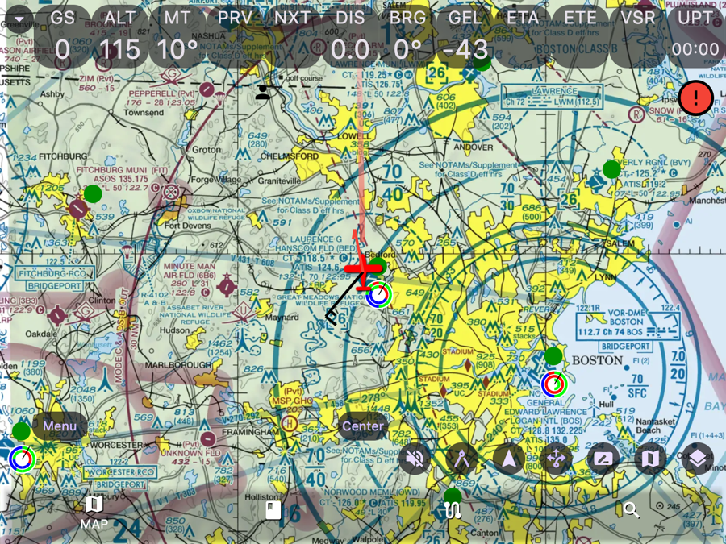
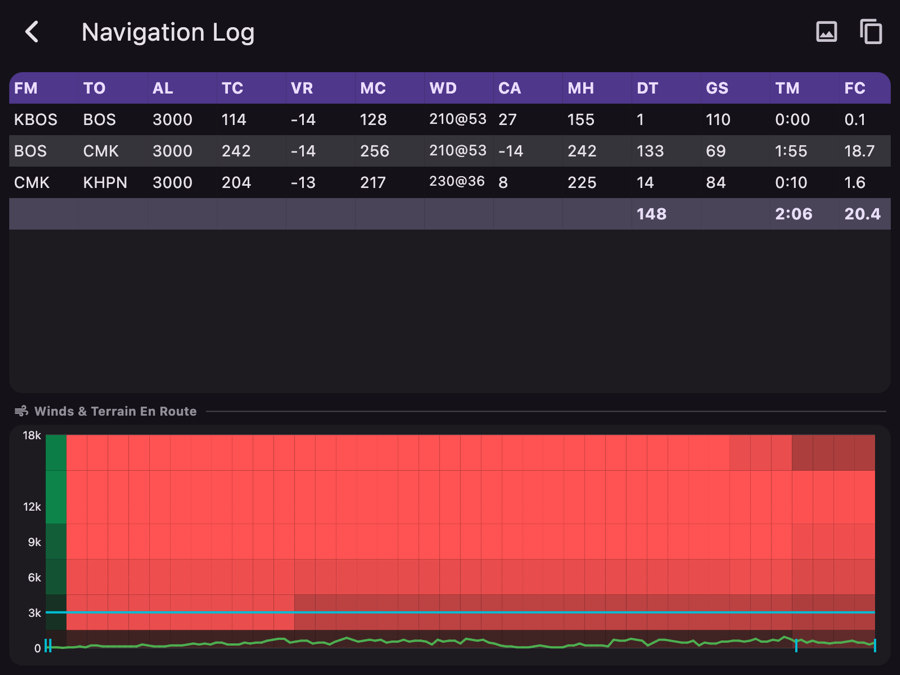

A full electronic flight bag.
Pro for $5/month.
Moving map, FAA charts, geo-referenced plates, ADS-B traffic, weather and flight planning are free to download and fly. Pro adds AI, cloud sync & more for $5/mo — a fraction of the ~$120–$300/yr others charge.
Also on Windows, macOS, Linux & Raspberry Pi. Works offline once charts are downloaded.

Everything you fly with — free to start
The core EFB below is free to download and fly. Pro ($5/mo) adds Flight Intelligence AI, cloud backup & sync, pilot community and an aircraft scheduler. Built by pilots, at Apps4Av.
Moving Map & FAA Charts
VFR sectional, TAC, flyway, heli, and IFR enroute low/high/area. Georeferenced ownship, track-up or north-up.
Geo-Referenced Plates
Approach plates, airport diagrams, SIDs & STARs with your ownship drawn on the plate.
ADS-B Traffic
Connect Stratux, Stratus, Echo & other GDL90 receivers. Traffic targets with audible alerts + GPWS.
Weather
METAR, TAF, PIREP, AIRMET/SIGMET, TFRs, NEXRAD radar, winds aloft & ceilings — color-coded.
Flight Planning
Routes from airports, navaids, fixes & airways. Per-leg nav log. File, brief & close FAA plans.
W&B, Performance & Logbook
Interactive CG envelope, takeoff/landing/cruise performance, plus a digital logbook with currency.
See it in the cockpit
Real screens from the app.

Why pilots switch
A full-featured EFB that also runs where the others don't.
| Capability | Typical paid EFB | AvareX |
|---|---|---|
| VFR/IFR moving map + geo-ref ownship | paid plan | Free core |
| Geo-referenced approach plates | paid plan | Free core |
| ADS-B traffic (Stratux/GDL90) | paid plan | Free core |
| Weather, winds aloft, NEXRAD | paid plan | Free core |
| Flight planning + file FAA plans | paid plan | Free core |
| Runs on Android, Windows, Linux | — | Yes |
| Price | ~$120–$300/yr | $0 to start · Pro $5/mo |
Frequently asked questions
What pilots ask before switching to AvareX.
Is AvareX free?
Yes. The core AvareX electronic flight bag is free to download and fly, including the moving map, FAA charts, geo-referenced approach plates, ADS-B traffic, weather, and flight planning. An optional Pro subscription is $5/month and adds the Flight Intelligence AI assistant, cloud backup and sync, pilot community, and an aircraft scheduler.
Is AvareX a free alternative to ForeFlight?
AvareX is a full electronic flight bag with a free core (charts, plates, ADS-B traffic, weather, and flight planning) and an optional $5/month Pro tier — compared with the roughly $120–$300 per year that comparable paid EFB apps such as ForeFlight charge. AvareX also runs on Android, Windows, Linux, and Raspberry Pi in addition to iOS.
Does AvareX work on Android?
Yes. AvareX runs on Android, iOS, Windows, macOS, Linux, and Raspberry Pi, so you are not limited to an iPad.
Does AvareX support ADS-B traffic?
Yes. AvareX connects to Stratux, Stratus, Echo, and other GDL90 receivers over Wi-Fi to display ADS-B traffic with altitude offset, trend, and audible alerts, plus a Ground Proximity Warning System (GPWS).
Does AvareX work offline?
Yes. Core navigation works fully offline once you download the charts and databases. Internet is only required for downloads, live weather, AI features, FAA plan filing, and cloud backup.
How much does AvareX Pro cost?
AvareX Pro is $5 per month. It adds the Flight Intelligence AI assistant, cloud backup and sync, pilot community groups, and an aircraft scheduler for clubs and flight schools. Pro is available on iOS and Android.
Is AvareX FAA-certified?
No. AvareX is not an FAA-certified GPS and must not be used as a sole means of navigation. Always cross-check with official sources and certified equipment.
Start flying with AvareX today
Free to download and fly. Pro just $5/month — cancel anytime.